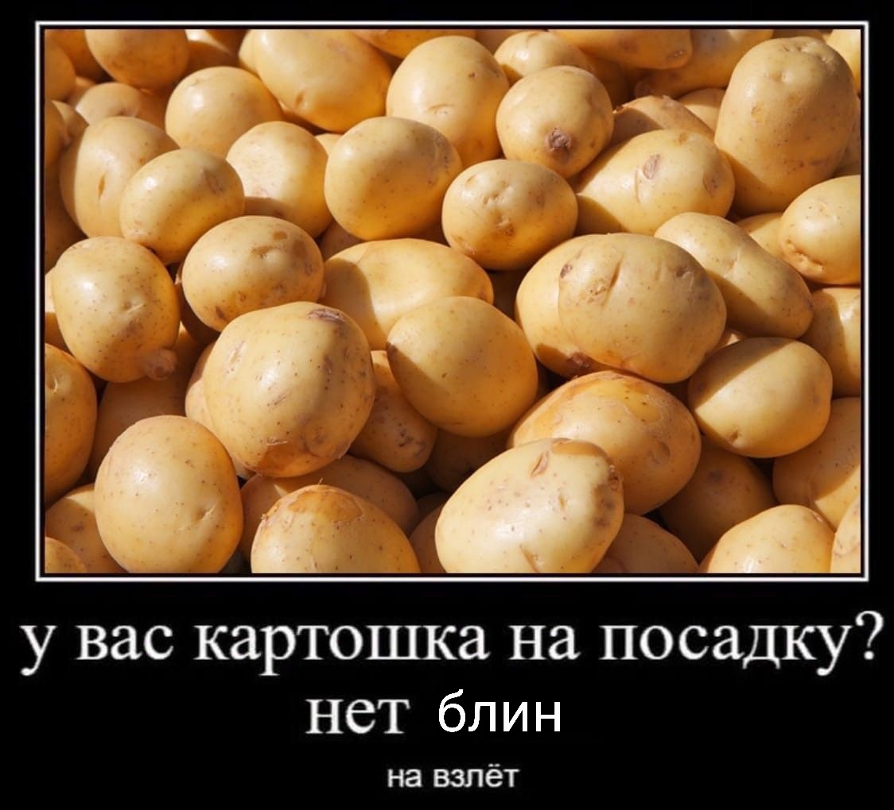

привеТ! Меня зовут Рыбаков Владислав Евгеньевич, мне 20 лет, и это моя первая веб-страница! Далее я расскажу немного о себе.
Обо мне
Основная информация
Мужчина, 20 лет, родился (Телец 1). Окончил школу с золотой медалью. В настоящее время учусь в НИУ ВШЭ на факультете МИЭМ по направлению Прикладная математика на 3 курсе.
Мои хобби:
- Теннис
- Игра на гитаре (и других музыкальных инструментах)
- Чтение (особенно русская фантастика!)
- Рисование
- Путешествия
- Компьютерные игры
- Кулинария
Навыки
-
программирование на языках:
- C\C++ (в т.ч. знание ООП , основных алгоритмов и структур данных, паттернов проектирования, основ работы с многопоточностью)
- Python (в т.ч. NumPy, работа с PDF документами)
- Assembler
- R (совсем немного)
- знание линейной алгебры, дискретной математики, теории вероятностей и математической статистики, дифференциальных уравнений, математического и функционального анализа
- владение системой верстки документов LaTeX
Проекты
- "Распознавание лиц с помощью методов машинного обучения" в команде из двух человек, занимался основной работой с изображением.
- "Встраивание невидимых цифровых водяных знаков в печатные документы с последующим распознаванием" (ссылка на страницу проекта) в команде из 4 человек (а также представление этого проекта на "Техношоу 2022" в МИЭМ в направлении "Безопасность"). В мои обязанности входило чтение научной литературы с целью изучения структуры PDF и различных алгоритмов встраивания и распознавания невидимых ЦВЗ в них, а так же реализация этих алгоритмов на языке Python.
Что мне нравится
Кодинг
for i in range 10:
print(i)
Мой любимый мем
И многое другое
⣿⣿⣿⣿⣿⣿⣿⣿⣿⣿⣿⣿⣿⣿⣿⣿⣿⣿⣿⣿⣿⣿⣿⣿⣿⣿⣿⣿⣿⣿⣿⣿⣿⣿⣿⣿⣿⣿⣿⣿⣿⣿⣿⣿⣿⣿⣿⣿⣿⣿
⣿⣿⣿⣿⣿⣿⣿⣿⣿⣿⣿⣿⣿⣿⣿⣿⣿⣿⣿⣿⣿⣿⣿⣿⣿⣿⣿⣿⣿⣿⣿⣿⣿⣿⣿⣿⣿⣿⣿⣿⣿⣿⣿⣿⣿⣿⣿⣿⣿⣿
⣿⣿⣿⣿⣿⣿⣿⣿⣿⣿⣿⣿⣿⣿⣿⣿⣿⣿⣿⣿⣿⣿⣿⣿⡿⢿⣿⣿⣿⣿⣿⣿⣿⣿⣿⣿⣿⣿⣿⣿⣿⣿⣿⣿⣿⣿⣿⣿⣿⣿
⣿⣿⣿⣿⣿⣿⣿⣿⣿⣿⣿⣿⣿⣿⣿⣿⣿⣿⣿⣿⣿⣿⣿⡟⠀⠀⢻⣿⣿⣿⣿⣿⣿⣿⣿⣿⣿⣿⣿⣿⣿⣿⣿⣿⣿⣿⣿⣿⣿⣿
⣿⣿⣿⣿⣿⣿⣿⣿⣿⣿⣿⣿⣿⣿⣿⣿⣿⣿⣿⣿⣿⣿⠟⠀⠐⠂⠀⠻⣿⣿⣿⣿⣿⣿⣿⣿⣿⣿⣿⣿⣿⣿⣿⣿⣿⣿⣿⣿⣿⣿
⣿⣿⣿⣿⣿⣿⣿⣿⣿⣿⣿⣿⣿⣿⣿⣿⣿⣿⣿⣿⣿⠏⠀⡠⠴⠤⣤⠀⠹⣿⣿⣿⣿⣿⣿⣿⣿⣿⣿⣿⣿⣿⣿⣿⣿⣿⣿⣿⣿⣿
⣿⣿⣿⣿⣿⣿⣿⣿⣿⣿⣿⣿⣿⣿⣿⣿⣿⣿⣿⣿⠏⠀⢀⣀⣀⣀⣀⡀⠀⠹⣿⣿⣿⣿⣿⣿⣿⣿⣿⣿⣿⣿⣿⣿⣿⣿⣿⣿⣿⣿
⣿⣿⣿⣿⣿⣿⣿⣿⣿⣿⣿⣿⣿⣿⣿⣿⣿⣿⡿⠃⠀⠈⠉⢁⣈⣿⣿⣿⣷⡀⠘⢿⣿⣿⣿⣿⣿⣿⣿⣿⣿⣿⣿⣿⣿⣿⣿⣿⣿⣿
⣿⣿⣿⣿⣿⣿⣿⣿⣿⣿⣿⣿⣿⣿⣿⣿⣿⡿⠃⠠⠴⠒⠛⠛⠛⠛⠛⠛⠛⠷⠄⠘⢿⣿⣿⣿⣿⣿⣿⣿⣿⣿⣿⣿⣿⣿⣿⣿⣿⣿
⣿⣿⣿⣿⣿⣿⣿⣿⣿⣿⣿⣿⣿⣿⣿⣿⡟⠁⠀⣀⣤⣴⣶⣶⣶⣶⣶⣶⣤⣄⣀⠀⠈⢻⣿⣿⣿⣿⣿⣿⣿⣿⣿⣿⣿⣿⣿⣿⣿⣿
⣿⣿⣿⣿⣿⣿⣿⣿⣿⣿⣿⣿⣿⣿⣿⠟⠀⣠⣾⣿⠿⠟⠛⠛⠛⠛⠛⠿⠿⣿⣿⣷⣆⠀⠻⣿⣿⣿⣿⣿⣿⣿⣿⣿⣿⣿⣿⣿⣿⣿
⣿⣿⣿⣿⣿⣿⣿⣿⣿⣿⣿⣿⣿⣿⠟⠀⠐⠋⠉⣀⡠⠤⠔⠒⠒⠒⠠⠤⢀⡀⠉⠛⠿⣆⠀⠻⣿⣿⣿⣿⣿⣿⣿⣿⣿⣿⣿⣿⣿⣿
⣿⣿⣿⣿⣿⣿⣿⣿⣿⣿⣿⣿⣿⠋⠀⢀⣠⠔⠊⠁⠀⢠⣤⣤⣶⣤⣤⣤⡀⠈⠑⠠⢄⠈⠁⠀⠙⣿⣿⣿⣿⣿⣿⣿⣿⣿⣿⣿⣿⣿
⣿⣿⣿⣿⣿⣿⣿⣿⣿⣿⣿⣿⠋⠀⢴⠋⠀⠀⠰⣧⠀⢸⣿⣿⣿⣿⣿⣿⡇⠀⣴⣄⠀⠑⠢⣤⡀⠙⣿⣿⣿⣿⣿⣿⣿⣿⣿⣿⣿⣿
⣿⣿⣿⣿⣿⣿⣿⣿⣿⣿⡿⠁⢀⣄⠀⠀⢾⣦⠀⠙⠦⠀⠙⠿⠿⠿⠿⠋⠀⣴⠋⠁⣀⣤⣠⣿⣷⡀⠈⢿⣿⣿⣿⣿⣿⣿⣿⣿⣿⣿
⣿⣿⣿⣿⣿⣿⣿⣿⣿⡟⠁⢀⠀⠙⢷⣶⣾⣿⣷⣤⣄⣰⣦⣄⣀⣀⣠⣴⣾⣿⣷⠾⠿⠀⠈⠉⠛⠓⠀⠈⢻⣿⣿⣿⣿⣿⣿⣿⣿⣿
⣿⣿⣿⣿⣿⣿⣿⣿⡟⠀⢀⠈⠓⢤⣀⠉⠙⠻⠿⠿⣿⣿⣿⣿⣿⣿⣿⣿⣿⣅⣀⣠⣤⣄⡀⠀⠒⠲⠶⠄⠀⢻⣿⣿⣿⣿⣿⣿⣿⣿
⣿⣿⣿⣿⣿⣿⣿⠏⠀⠀⠉⠀⠀⠀⠙⠷⣶⣤⣤⣀⣀⣀⡉⠉⣹⣿⣿⣿⣿⣿⣿⣿⣿⣿⣿⣶⣦⣤⣀⣀⣀⠀⠹⣿⣿⣿⣿⣿⣿⣿
⣿⣿⣿⣿⣿⣿⠏⠀⣰⣿⣷⣄⡀⠙⠢⡀⠈⠻⣿⣿⣿⣿⣿⣿⣿⣿⣿⣿⣿⣿⣿⣿⣿⣿⣿⣿⣿⣿⣿⣿⣿⣆⠀⠹⣿⣿⣿⣿⣿⣿
⣿⣿⣿⣿⣿⣇⣀⣀⣀⣀⣀⣀⣀⣀⣀⣀⣀⣀⣀⣀⣀⣀⣀⣀⣀⣀⣀⣀⣀⣀⣀⣀⣀⣀⣀⣀⣀⣀⣀⣀⣀⣀⣀⣀⣸⣿⣿⣿⣿⣿
⣿⣿⣿⣿⣿⣿⣿⣿⣿⣿⣿⣿⣿⣿⣿⣿⣿⣿⣿⣿⣿⣿⣿⣿⣿⣿⣿⣿⣿⣿⣿⣿⣿⣿⣿⣿⣿⣿⣿⣿⣿⣿⣿⣿⣿⣿⣿⣿⣿⣿
⣿⣿⣿⣿⣿⣿⣿⣿⣿⣿⣿⣿⣿⣿⣿⣿⣿⣿⣿⣿⣿⣿⣿⣿⣿⣿⣿⣿⣿⣿⣿⣿⣿⣿⣿⣿⣿⣿⣿⣿⣿⣿⣿⣿⣿⣿⣿⣿⣿⣿
⣿⣿⣿⣿⣿⣿⣿⣿⣿⣿⣿⣿⣿⣿⣿⣿⣿⣿⣿⣿⣿⣿⣿⣿⣿⣿⣿⣿⣿⣿⣿⣿⣿⣿⣿⣿⣿⣿⣿⣿⣿⣿⣿⣿⣿⣿⣿⣿⣿⣿
⣿⣿⣿⣿⣿⣿⣿⣿⣿⣿⣿⣿⣿⣿⣿⣿⣿⣿⣿⣿⣿⣿⣿⣿⣿⣿⣿⣿⣿⣿⣿⣿⣿⣿⣿⣿⣿⣿⣿⣿⣿⣿⣿⣿⣿⣿⣿⣿⣿⣿
⣿⣿⣿⣿⣿⣿⣿⣿⣿⣿⣿⣿⣿⣿⣿⣿⣿⣿⣿⣿⣿⣿⣿⣿⣿⣿⣿⣿⣿⣿⣿⣿⣿⣿⣿⣿⣿⣿⣿⣿⣿⣿⣿⣿⣿⣿⣿⣿⣿⣿